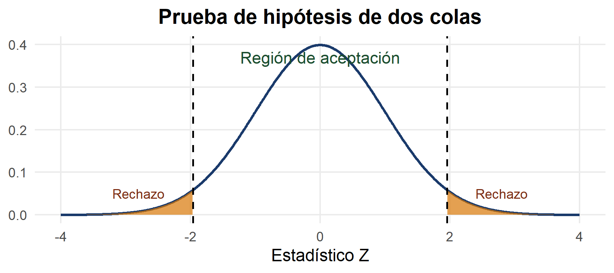
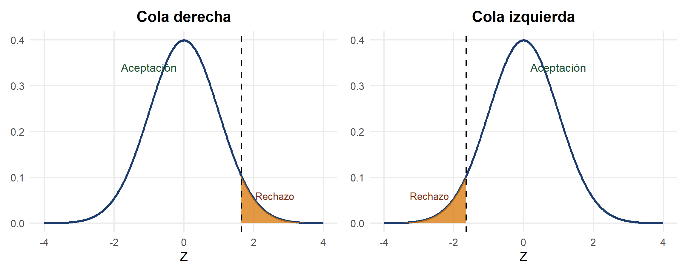
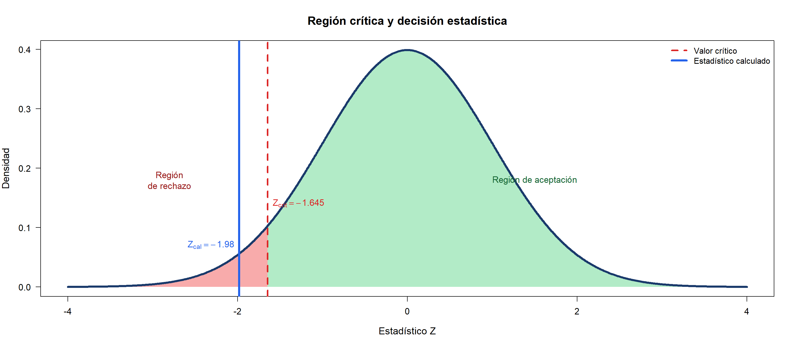

[1] -2.782804[1] 0.005389129Departamento de Estadı́stica, Sede Bogotá
Bioestadística Fundamental, Departamento de Estadística, UNAL Bogotá
Introducción a las Pruebas de Hipótesis
Las pruebas de hipótesis son herramientas fundamentales de la inferencia estadística que permiten tomar decisiones sobre una población a partir de información muestral. Mediante este procedimiento, se evalúa si existe evidencia suficiente para aceptar o rechazar una afirmación planteada sobre un parámetro poblacional.
Una prueba de hipótesis es un procedimiento estadístico que permite evaluar afirmaciones sobre una población utilizando información obtenida de una muestra.
Su objetivo es determinar, con base en la evidencia muestral, si existe suficiente información para aceptar o rechazar una afirmación acerca de un parámetro poblacional.
Para desarrollar una prueba de hipótesis es necesario comprender algunos conceptos fundamentales y la terminología utilizada en inferencia estadística.
Hipótesis nula \((H_0)\)
Es la afirmación inicial que se asume verdadera hasta encontrar evidencia en contra.
Hipótesis alternativa \((H_1)\)
Es la afirmación que plantea una diferencia o efecto.
Nivel de significancia \((\alpha)\)
Representa el nivel de riesgo aceptado al tomar una decisión.
Región de aceptación y rechazo
Determina cuándo se rechaza o no la hipótesis nula.
Otros conceptos importantes permiten interpretar correctamente los resultados de una prueba de hipótesis.
Estadístico de prueba
Es el valor calculado a partir de la muestra y utilizado para tomar la decisión estadística.
Valor-p
Indica qué tan compatible son los datos observados con la hipótesis nula.
Prueba unilateral
Evalúa si el parámetro es mayor o menor que un valor específico.
Prueba bilateral
Evalúa si el parámetro es diferente de un valor específico.
Toda prueba de hipótesis se construye a partir de dos afirmaciones opuestas sobre un parámetro poblacional.
Hipótesis nula
\[ H_0 \]
Representa la afirmación inicial o situación de referencia.
Se asume verdadera mientras no exista evidencia suficiente para rechazarla.
Hipótesis alternativa
\[ H_1 \]
Representa la afirmación contraria a la hipótesis nula y refleja el efecto, diferencia o cambio que se desea demostrar.
Las pruebas de hipótesis se clasifican según la dirección planteada en la hipótesis alternativa.
Prueba de dos colas
\[ H_0:\mu = \mu_0 \]
\[ \color{#166534}{H_1:\mu \neq \mu_0} \]
Se utiliza cuando se desea verificar si existe cualquier diferencia respecto al valor planteado.
Prueba de cola derecha
\[ H_0:\mu \leq \mu_0 \]
\[ \color{#1d4ed8}{H_1:\mu > \mu_0} \]
Se aplica cuando se busca evidencia de un aumento respecto al valor de referencia.
Prueba de cola izquierda
\[ H_0:\mu \geq \mu_0 \]
\[ \color{#c2410c}{H_1:\mu < \mu_0} \]
Se utiliza cuando se desea comprobar una disminución respecto al valor planteado.
En una prueba de hipótesis, la decisión estadística se fundamenta en el análisis del estadístico de prueba y del valor-p.
Estadístico de prueba
Es una medida calculada a partir de los datos muestrales que permite comparar la información observada con lo planteado en la hipótesis nula.
Su valor indica qué tan alejados están los datos respecto al valor esperado bajo \(H_0\).
\[ Z = \frac{\bar{x}-\mu_0}{\sigma/\sqrt{n}} \]
Valor-p
Representa la probabilidad de obtener resultados tan extremos como los observados, suponiendo que la hipótesis nula es verdadera.
Permite medir la evidencia estadística en contra de la hipótesis nula.
Procedimiento de las Pruebas de Hipótesis
El procedimiento de una prueba de hipótesis consiste en una serie de pasos estadísticos que permiten evaluar afirmaciones sobre una población a partir de información muestral. Este proceso facilita la toma de decisiones mediante el planteamiento de hipótesis, el cálculo de un estadístico de prueba y el análisis de la evidencia estadística obtenida.
La prueba de hipótesis para la media permite evaluar afirmaciones relacionadas con el promedio de una población.
Objetivo
Determinar si la media poblacional es igual, mayor, menor o diferente de un valor de referencia.
Tipos de hipótesis
Prueba de dos colas
\[ H_0:\mu=\mu_0 \]
\[ H_1:\mu \neq \mu_0 \]
Prueba de cola derecha
\[ H_0:\mu \leq \mu_0 \]
\[ H_1:\mu > \mu_0 \]
Prueba de cola izquierda
\[ H_0:\mu \geq \mu_0 \]
\[ H_1:\mu < \mu_0 \]
Estadístico de Prueba
\[ Z = \frac{\bar{x}-\mu_0}{\sigma/\sqrt{n}} \]
La prueba de hipótesis para la proporción permite evaluar afirmaciones relacionadas con la proporción poblacional de individuos que presentan una determinada característica.
Objetivo
Determinar si la proporción poblacional es igual, mayor, menor o diferente de un valor de referencia.
Tipos de hipótesis
Prueba de dos colas
\[ H_0:p=p_0 \]
\[ H_1:p \neq p_0 \]
Prueba de cola derecha
\[ H_0:p \leq p_0 \]
\[ H_1:p > p_0 \]
Prueba de cola izquierda
\[ H_0:p \geq p_0 \]
\[ H_1:p < p_0 \]
Estadístico de Prueba
\[ Z = \frac{\hat{p}-p_0}{\sqrt{\frac{p_0(1-p_0)}{n}}} \]
Después de calcular el estadístico de prueba, es necesario establecer una regla que permita decidir si la hipótesis nula debe rechazarse o no.
Idea principal
La decisión estadística se toma comparando el estadístico de prueba con valores críticos obtenidos de una distribución de probabilidad o utilizando el valor-p.
\[ \text{Si el estadístico cae en la región crítica, se rechaza } H_0 \]


En una prueba bilateral, la región crítica se encuentra distribuida en ambos extremos de la distribución.
\[ H_0:\mu=\mu_0 \]
\[ H_1:\mu \neq \mu_0 \]
Se rechaza \(H_0\) si:
\[ Z < -Z_{\alpha/2} \quad \text{o} \quad Z > Z_{\alpha/2} \]
En una prueba de cola derecha, toda la región crítica se ubica en el extremo derecho de la distribución.
\[ H_0:\mu \leq \mu_0 \]
\[ H_1:\mu > \mu_0 \]
Se rechaza \(H_0\) si:
\[ Z > Z_{\alpha} \]
En una prueba de cola izquierda, la región crítica se encuentra en el extremo izquierdo de la distribución.
\[ H_0:\mu \geq \mu_0 \]
\[ H_1:\mu < \mu_0 \]
Se rechaza \(H_0\) si:
\[ Z < -Z_{\alpha} \]
En las pruebas de hipótesis para la proporción, la decisión estadística se toma utilizando el estadístico de prueba y las regiones críticas de la distribución normal estándar.
Región de aceptación
Conjunto de valores del estadístico para los cuales no existe evidencia suficiente para rechazar la hipótesis nula.
Región crítica
Zona extrema donde los valores observados proporcionan evidencia suficiente para rechazar \(H_0\).
En una prueba bilateral para proporciones, la región crítica se distribuye en ambos extremos de la distribución.
\[ H_0:p=p_0 \]
\[ H_1:p \neq p_0 \]
Se rechaza \(H_0\) si:
\[ Z < -Z_{\alpha/2} \quad \text{o} \quad Z > Z_{\alpha/2} \]
En una prueba de cola derecha, la región crítica se encuentra en el extremo derecho de la distribución.
\[ H_0:p \leq p_0 \]
\[ H_1:p > p_0 \]
Se rechaza \(H_0\) si:
\[ Z > Z_{\alpha} \]
En una prueba de cola izquierda, la región crítica se ubica en el extremo izquierdo de la distribución.
\[ H_0:p \geq p_0 \]
\[ H_1:p < p_0 \]
Se rechaza \(H_0\) si:
\[ Z < -Z_{\alpha} \]
La decisión también puede tomarse comparando el valor-p con el nivel de significancia \(\alpha\).
Rechazar \(H_0\)
\[ p < \alpha \]
No rechazar \(H_0\)
\[ p \geq \alpha \]
Mientras menor sea el valor-p, mayor será la evidencia estadística en contra de la hipótesis nula.
El valor-p representa la probabilidad de obtener un resultado tan extremo como el observado, suponiendo que la hipótesis nula es verdadera.
Cálculo del valor-p
Cola derecha
\[ p=P(Z>Z_{obs}) \]
Cola izquierda
\[ p=P(Z<Z_{obs}) \]
Dos colas
\[ p=2P(Z>|Z_{obs}|) \]
Las pruebas de hipótesis también pueden interpretarse mediante intervalos de confianza.
La idea principal consiste en verificar si el valor propuesto en la hipótesis nula pertenece o no al intervalo de confianza construido con los datos muestrales.
No rechazar \(H_0\)
Si el valor planteado en la hipótesis nula pertenece al intervalo de confianza, no existe evidencia suficiente para rechazar \(H_0\).
Rechazar \(H_0\)
Si el valor propuesto en \(H_0\) queda fuera del intervalo de confianza, existe evidencia suficiente para rechazar \(H_0\).
Existe una relación directa entre el nivel de significancia y el nivel de confianza.
\[ \text{Nivel de confianza} = 1 - \alpha \]
Por ejemplo:
La decisión estadística puede visualizarse observando si el valor hipotético pertenece al intervalo de confianza.
\[ IC=(48.2,\ 53.7) \]
La elección del estadístico de prueba depende principalmente del tamaño de la muestra y del conocimiento de la desviación estándar poblacional.
Prueba Z
Se utiliza cuando:
\[ n \geq 30 \]
\[ Z = \frac{\bar{x}-\mu_0}{\sigma/\sqrt{n}} \]
Prueba t
Se utiliza cuando:
\[ n < 30 \]
\[ t = \frac{\bar{x}-\mu_0}{s/\sqrt{n}} \]
En pruebas para proporciones, generalmente se utiliza la distribución normal estándar cuando el tamaño muestral es suficientemente grande.
En pruebas de hipótesis para proporciones, la distribución normal estándar puede utilizarse cuando el tamaño de muestra es suficientemente grande.
Condiciones de aproximación normal
\[ np \geq 5 \]
\[ n(1-p)\geq 5 \]
Estas condiciones permiten aproximar la distribución muestral de la proporción mediante una distribución normal.
Cuando el tamaño de muestra es pequeño, la distribución muestral de la proporción puede no aproximarse adecuadamente a una distribución normal.
Esto puede generar:
En estos casos, pueden utilizarse métodos exactos, como la prueba binomial exacta.
| Distribución | Media | Varianza |
|---|---|---|
| Bernoulli\((p)\) | \(p\) | \(p(1-p)\) |
| Binomial\((n,p)\) | \(np\) | \(np(1-p)\) |
| Poisson\((\lambda)\) | \(\lambda\) | \(\lambda\) |
| Uniforme\((a,b)\) | \(\frac{a+b}{2}\) | \(\frac{(b-a)^2}{12}\) |
| Exponencial\((\lambda)\) | \(\frac{1}{\lambda}\) | \(\frac{1}{\lambda^2}\) |
| Normal\((\mu,\sigma^2)\) | \(\mu\) | \(\sigma^2\) |
| t de Student\((\nu)\) | \(0\) | \(\frac{\nu}{\nu-2}\) |
| Chi-cuadrado\((\nu)\) | \(\nu\) | \(2\nu\) |
| Gamma\((\alpha,\beta)\) | \(\alpha\beta\) | \(\alpha\beta^2\) |
| Beta\((\alpha,\beta)\) | \(\frac{\alpha}{\alpha+\beta}\) | \(\frac{\alpha\beta}{(\alpha+\beta)^2(\alpha+\beta+1)}\) |
Estas distribuciones son fundamentales en inferencia estadística y sirven como base para la construcción de intervalos de confianza y pruebas de hipótesis.
Una cooperativa cafetera en Caldas afirma que la producción promedio de café es de 32 sacos por hectárea.
Datos
\[ \bar{x}=29.8 \]
\[ \sigma=5 \]
\[ n=40 \]
\[ \alpha=0.05 \]
Pregunta
¿Existe evidencia suficiente para afirmar que la producción promedio es diferente de 32 sacos por hectárea?
\[ H_0:\mu=32 \]
\[ H_1:\mu\neq32 \]
Se trata de una prueba de dos colas.
Como la desviación estándar poblacional es conocida y la muestra es grande, se utiliza una prueba Z.
Bajo \(H_0\), el estadístico de prueba se calcula como:
\[ Z=\frac{\bar{x}-\mu_0}{\sigma/\sqrt{n}} \]
\[ Z=\frac{29.8-32}{5/\sqrt{40}} \]
\[ Z=-2.78 \]
Para una prueba bilateral con: \(\alpha=0.05\)
los valores críticos son: \(\pm1.96\)
Como:
\[ Z_{cal}=-2.78<Z_{crit}=-1.96 \]
se rechaza \(H_0\).
\[ p=2P(Z>|-2.78|) \]
\[
p\approx0.0054
\]
Como:
\[ p<0.05 \]
se rechaza la hipótesis nula.
Conclusión
Existe evidencia estadística suficiente para afirmar que la producción promedio de café por hectárea en las fincas evaluadas es diferente de 32 sacos.
Un grupo de investigadores agrícolas en Boyacá desea verificar si el rendimiento promedio de papa criolla es menor a 18 toneladas por hectárea.
Datos
\[ \bar{x}=16.9 \]
\[ s=2.4 \]
\[ n=15 \]
\[ \alpha=0.05 \]
Pregunta
¿Existe evidencia suficiente para afirmar que el rendimiento promedio es menor a 18 toneladas por hectárea?
\[ H_0:\mu\geq18 \]
\[ H_1:\mu<18 \]
Se trata de una prueba de cola izquierda.
Como la desviación estándar poblacional es desconocida y la muestra es pequeña, se utiliza una prueba t de Student.
\[ t=\frac{\bar{x}-\mu_0}{s/\sqrt{n}} \]
\[ t=\frac{16.9-18}{2.4/\sqrt{15}} \]
\[ t=-1.77 \]
Para: \(\alpha=0.05\) y \(gl=n-1=14\)
el valor crítico es:
\[ t_{0.05,14}=-1.761 \]
Como:
\[ t_{cal}=-1.77<t_{crit}=-1.761 \]
se rechaza \(H_0\).
\[ p=P(T<-1.77) \]
\[ p\approx0.049 \]
Como:
\[ p<0.05 \]
se rechaza la hipótesis nula.
Conclusión
Aunque el valor-p es ligeramente menor que 0.05, existe evidencia estadística para rechazar \(H_0\) y concluir que el rendimiento promedio de papa criolla es menor a 18 toneladas por hectárea. Sin embargo, la evidencia estadística es débil, ya que el valor-p se encuentra muy cercano al nivel de significancia.
Un investigador agrícola en el Valle del Cauca estudia el número promedio de insectos por planta en un cultivo de caña de azúcar.
Se asume que el número de insectos sigue una distribución Poisson.
Datos
\[ \bar{x}=7.1 \]
\[ \mu_0=6 \]
\[ n=50 \]
\[ \alpha=0.05 \]
Pregunta
¿Existe evidencia suficiente para afirmar que el número promedio de insectos por planta es mayor a 6?
\[ H_0:\mu\leq6 \]
\[ H_1:\mu>6 \]
Se trata de una prueba de cola derecha.
Para una distribución Poisson:
\[ Var(X)=\mu \]
por lo tanto:
\[ \sigma=\sqrt{\mu_0}=\sqrt{6} \]
Estadístico de prueba: Bajo \(H_0\), se calcula como: \[ Z=\frac{\bar{x}-\mu_0}{\sqrt{\mu_0/n}} \]
\[ Z=\frac{7.1-6}{\sqrt{6/50}} \]
\[ Z=3.18 \]
Para: \(\alpha=0.05\)
el valor crítico es:
\[ Z_{0.05}=1.645 \]
Como:
\[ Z_{cal}=3.18>Z_{0.05}=1.645 \]
se rechaza \(H_0\).
Aplicando el criterio del intervalo de confianza, al 95% se tiene que:
\[ IC=(6.42,\ 7.78) \]
Como: \(6\notin IC\)
se rechaza la hipótesis nula.
Conclusión
Existe evidencia estadística suficiente para afirmar que el número promedio de insectos por planta en los cultivos evaluados es mayor a 6.
Una empresa agrícola en Córdoba afirma que el 85% de las semillas de maíz germinan correctamente.
Se evalúan 200 semillas y 160 germinan de forma adecuada.
Datos
\[ \hat{p}=\frac{160}{200}=0.80 \]
\[ p_0=0.85 \]
\[ n=200 \]
\[ \alpha=0.05 \]
Pregunta
¿Existe evidencia suficiente para afirmar que la proporción de germinación es menor al 85%?
\[ H_0:p\geq0.85 \]
\[ H_1:p<0.85 \]
Se trata de una prueba de cola izquierda.
Como la muestra es grande, se utiliza la aproximación normal.
\[ Z=\frac{\hat{p}-p_0}{\sqrt{\frac{p_0(1-p_0)}{n}}} \]
\[ Z=\frac{0.80-0.85}{\sqrt{\frac{0.85(0.15)}{200}}} \]
\[ Z=-1.98 \]
Para:
\(\alpha=0.05\)
el valor crítico es:
\[ Z_{0.05}=-1.645 \]
Como:
\[ Z_{cal}=-1.98<-1.645 \]
se rechaza \(H_0\).
\[ p=P(Z<-1.98) \]
\[ p\approx0.024 \]
Como:
\[ p<0.05 \]
se rechaza la hipótesis nula.
Conclusión
Existe evidencia estadística suficiente para afirmar que la proporción de germinación de semillas de maíz es menor al 85%.

[1] 0.8[1] -1.980295[1] 0.02383519
1-sample proportions test without continuity correction
data: x out of n, null probability p0
X-squared = 3.9216, df = 1, p-value = 0.02384
alternative hypothesis: true p is less than 0.85
95 percent confidence interval:
0.000000 0.842381
sample estimates:
p
0.8 Las pruebas de hipótesis permiten tomar decisiones estadísticas sobre parámetros poblacionales a partir de información muestral.
Durante la clase se estudiaron los principales elementos que conforman una prueba de hipótesis y los criterios utilizados para aceptar o rechazar una hipótesis nula.
Conceptos fundamentales
Criterios de decisión
Ideas clave
La decisión estadística depende de la evidencia aportada por la muestra.
Rechazar (H_0) no significa que sea falsa de manera absoluta, sino que existe suficiente evidencia estadística en su contra.
Los diferentes criterios de decisión deben conducir a conclusiones consistentes cuando se aplican correctamente.
La selección del estadístico de prueba depende del parámetro estudiado, el tamaño muestral y la distribución de probabilidad utilizada.
La siguiente tabla resume los principales elementos utilizados en las pruebas de hipótesis para la media y la proporción, así como los criterios de decisión más importantes.
| Parámetro | Estadístico de prueba | Condición de uso | Criterio por región crítica | Criterio por valor-p |
|---|---|---|---|---|
| Media \((\mu)\) | \[Z=\frac{\bar{x}-\mu_0}{\sigma/\sqrt{n}}\] | \(\sigma\) conocida o \(n\geq30\) | Rechazar \(H_0\) si el estadístico cae en la región crítica | Rechazar \(H_0\), si \(p<\alpha\) |
| Media \((\mu)\) | \[t=\frac{\bar{x}-\mu_0}{s/\sqrt{n}}\] | \(\sigma\) desconocida y \(n<30\) | Comparar con valores críticos de t | Rechazar \(H_0\), si \(p<\alpha\) |
| Proporción \((p)\) | \[Z=\frac{\hat{p}-p_0}{\sqrt{\frac{p_0(1-p_0)}{n}}}\] | Muestras grandes | Comparar con valores críticos de Z | Rechazar \(H_0\), si \(p<\alpha\) |
La ubicación de la región crítica depende de la hipótesis alternativa planteada.
Esta región contiene los valores del estadístico de prueba que conducen al rechazo de \(H_0\).
Dos colas
\[ H_1:\theta\neq\theta_0 \]
La región crítica se ubica en ambos extremos de la distribución.
Se utiliza cuando se desea detectar cualquier diferencia significativa.
Cola derecha
\[ H_1:\theta>\theta_0 \]
La región crítica se encuentra en la parte derecha de la distribución.
Se utiliza para evaluar incrementos o aumentos.
Cola izquierda
\[ H_1:\theta<\theta_0 \]
La región crítica se ubica en la parte izquierda de la distribución.
Se utiliza para evaluar disminuciones o reducciones.
La elección correcta del tipo de prueba depende directamente del objetivo del estudio y de la hipótesis alternativa planteada por el investigador.
Resuelva los siguientes ejercicios aplicando:
Utilice un nivel de significancia de:
\[ \alpha=0.05 \]
Una asociación cafetera en Antioquia afirma que la producción promedio de café es de 35 sacos por hectárea.
Se seleccionan 49 fincas y se obtiene:
\[ \bar{x}=33.2 \]
La desviación estándar poblacional es:
\[ \sigma=4.5 \]
Determine si existe evidencia suficiente para afirmar que la producción promedio es menor a 35 sacos por hectárea.
Un investigador agrícola en Nariño estudia el peso promedio de bultos de papa.
Se toma una muestra de:
\[ n=16 \]
y se obtiene:
\[ \bar{x}=48.5 \text{ kg} \]
\[ s=3.2 \text{ kg} \]
Se desea verificar si el peso promedio es diferente de:
\[ 50 \text{ kg} \]
En un cultivo de arroz en Tolima, el número promedio de insectos por planta sigue una distribución Poisson.
En una muestra de 60 plantas se obtiene:
\[ \bar{x}=5.8 \]
Se desea verificar si el promedio de insectos por planta es mayor a:
\[ 5 \]
Una empresa de semillas afirma que el 90% de las semillas de tomate germinan correctamente.
Se evalúan:
\[ n=250 \]
semillas y 210 germinan adecuadamente.
Determine si existe evidencia suficiente para afirmar que la proporción de germinación es menor al 90%.
Un grupo de agrónomos en el Meta afirma que el rendimiento promedio de maíz es de 6 toneladas por hectárea.
Se seleccionan:
\[ n=36 \]
parcelas y se obtiene:
\[ \bar{x}=6.7 \]
La desviación estándar poblacional es:
\[ \sigma=1.8 \]
¿Existe evidencia suficiente para afirmar que el rendimiento promedio es superior a 6 toneladas por hectárea?